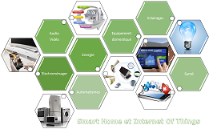

Equipement doméstique
 acceuille
Réseau
audiovisuel
acceuille
Réseau
audiovisuel
définition de Audiovisuel :
Audiovisuel:
L'équipement de la maison regroupe, dans la nomenclature commerciale,
l'ensemble des produits permettant de fournir à un foyer ses équipements.
Il comprend entre autres l'ameublement, l'électroménager, les arts de la table,
le linge de maison, les luminaires, les textiles d'ameublement1.On l'oppose généralement
à l'équipement de la personne, qui comporte des produits souvent sortis du foyer par l'utilisateur,
notamment les vêtements et les chaussures.
